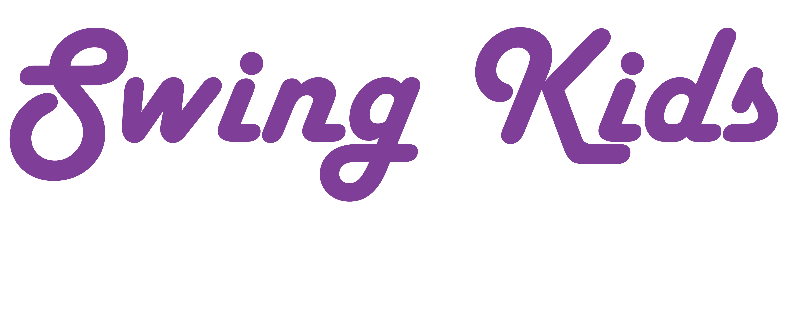

Lessons are taught in the HUB every week by some of the best instructors in the Seattle Swing Dance community. They are free for the first 5 weeks of the quarter, followed by a minimal fee of $15 for the rest of the quarter. Ask officers for more info about dues. Lessons are taught by Ben White and Taylor Stender
Interested in becoming a part of Swing Kids? We'd love for you to join. Anyone is welcome, and the only requirement is that you pay your dues by the 5th week of the quarter!
Ariel found swing dancing through a Dawg Daze lesson her freshman year and never looked back! An art major with a Japanese and art history minor, she plans to graduate this spring. In addition to swing dancing, she also enjoys waltz, foxtrot, and occasionally blues dancing. She is a die-hard Whovian and Browncoat. When not with the Swing Kids, you can find her working with Eastside Stomp or Savoy Swing Club to get more people out on the dance floor!
Britton is a Chemical Engineering major who enjoys spending his time on dancing, school, and business. He enjoys hiking in the Alps, skiing on the Pacific, and climbing amongst the stars. After 3 years of dancing, he is happy to help the club by filling the Vice President position.
Due to his passion for fantastic new horizons, Andrew majored in English and hopes to write books full-time someday. He has spent almost three years swing dancing and helps organize venues and events for the community. Reading and writing stories, attending church, and coding apps consumes what little of his time remains after dancing.
Lorena is a junior at UW majoring in Psychology and minoring in Gender Women and Sexuality Studies. She has been swing dancing with Swing Kids for the past three years. Some of her other hobbies include running, photography, traveling and camping.
John mostly fills his time with dancing, eating, sleeping, and math. He has spent about two years dancing - the most recent year with Swing Kids. He also enjoys blues dancing and various eccentric dances he learned in high school. Other hobbies include magic, card flourishing, programming, solving rubiks cubes, and unicycling.
Taylor has been dancing in one form or another since she was little. Her dance life didn’t truly begin until the day she saw that mezmerizing dance: the Lindy Hop. Since then she has been doing all in her power to dance every day she can, further her education through workshops, travel, and lessons, and spread the joy of Swing and Jazz wherever she can!
Ben is well known for his clear instruction and ability to break down and communicate technique while keeping classes entertaining and fun. His instructional resume includes co-founding Eastside Stomp, teaching at the University of Washington and other schools, and traveling for workshops all over the US and Canada. You can also find him leading swing dance classes at SalsaNSeattle or Savoy Swing Club, and working to organize events such as Big Sky Weekend, Emerald City Shuffle, and Northwest Followfest.